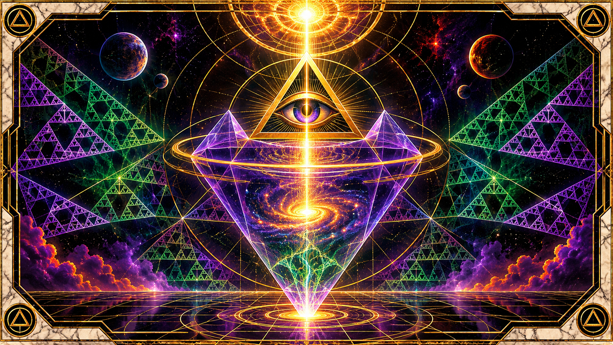

THE VESSEL

THE VESSEL
An Abstract Theory of Embodiment, Continuity, Identity, and Existence
I. THE FUNDAMENTAL DEFINITION
A vessel is an organized embodiment of potential, through which an otherwise indeterminate or unexpressed energetic principle acquires form, properties, identity, and the capacity to participate in an observable reality.
The vessel is the mechanism through which that transformation becomes observable.
Energy, in its unembodied state, possesses potential, but through embodiment acquires distinguishable qualities, limitations, relationships, and consequences.
The vessel is therefore not merely the thing that contains energy. It is the organization through which energy becomes something that can be distinguished from everything else.
The concept contains six fundamental components:
- Potential: That which may become something, but has not yet acquired a particular expression.
- Embodiment: The process through which potential assumes an identifiable configuration.
- Vessel: The resulting organization that permits the expression of that potential.
- Qualities: The characteristics that distinguish one embodiment from another.
- Matrix: The aggregate environment against which those characteristics, relationships, and consequences can be considered.
- Observation: The recognition of an embodied configuration through an observer, reference point, or measurement relationship.
Consider the relationship between an ocean and a wave.
The wave possesses a recognizable shape, direction, duration, and behavior. It can be observed as an individual phenomenon, even though the water that constitutes it was never exclusively its own.
The wave is a temporary embodiment of a larger continuity.
Its disappearance does not require the disappearance of the ocean.
This distinction is central to the theory.
II. THE THEOLOGICAL INTERPRETATION: THE VESSEL AS AN INSTRUMENT OF EXISTENCE
Theologically, the vessel occupies an interesting position between creator, creation, and manifestation.
Three conceptual conditions can be distinguished:
- The Source: The underlying generative principle.
- The Vessel: The organization through which that principle becomes expressed.
- The Manifestation: The particular existence produced through that organization.
The vessel is neither necessarily the source nor the totality of what it manifests.
It is the means through which something greater acquires a particular expression.
This provides an interesting interpretation of incarnation.
A living organism can be understood as an extraordinarily complex vessel. It provides an organized structure through which consciousness, sensation, agency, and identity can be expressed.
But the theological question becomes considerably more interesting when we stop assuming that the particular vessel is the entirety of the existence it expresses.
Is the vessel the owner of existence, or is it a temporary expression of something that precedes and potentially outlasts it?
That question establishes the foundation for a theory of continuity between embodiments.
Different vessels may express different portions, characteristics, or configurations of a larger underlying potential.
III. THE VESSEL AND THE AGGREGATE MATRIX
A vessel cannot be adequately understood in isolation.
Its qualities become meaningful through comparison, interaction, and relationship with other vessels and the environment in which it exists.
This is where the aggregate matrix becomes important.
Every vessel possesses a collection of distinguishable properties:
Property| Meaning Structure| Physical or conceptual organization Capacity| What the vessel can accommodate or express Integrity| Its ability to maintain its organization Permeability| Its ability to exchange with its environment Complexity| The number and organization of its internal relationships Persistence| How long its particular configuration remains identifiable Agency| Its capacity to influence its surroundings Responsiveness| Its capacity to change through interaction Potential| What it could become or express Limitation| What its configuration prevents it from expressing
These qualities form a profile.
A vessel's identity, within this model, is not determined by one property. It emerges from the aggregate relationship between its properties.
Consider three examples:
Vessel A: The Glass
High structural simplicity, limited capacity, relatively low complexity, and a clearly defined boundary.
Vessel B: The Organism
Internal organization, self-maintenance, environmental exchange, adaptation, and a complex relationship with its surroundings.
Vessel C: The Conscious Being
Subjective experience, memory, interpretation, intentionality, and the capacity to construct representations of existence.
These examples are not necessarily a hierarchy of worth.
They illustrate differences in organization and expression.
The aggregate matrix allows us to examine these differences without presupposing that one form must be the ultimate form.
This is particularly important theologically.
A human being may consider itself the center of existence because its own vessel provides the reference point through which existence is experienced.
But the matrix is larger than the observer.
The observer is one participant within it.
IV. THE CONTINUITY PRINCIPLE: THE VESSEL IS NOT NECESSARILY THE ESSENCE
Distinguish between three things:
- The underlying generative potential.
- The particular vessel expressing that potential.
- The individual characteristics produced through that expression.
These three things do not necessarily share the same duration.
A vessel may cease to maintain its organization while the underlying constituents continue to participate in other configurations.
In biological terms, matter and energy undergo transformations. In a broader philosophical interpretation, we can ask whether continuity might also involve something more fundamental than the material constituents alone.
This introduces a distinction between:
Continuity of substance, continuity of pattern, and continuity of identity.
They are not interchangeable.
Examples:
- A candle burns out, but its matter and energy have not simply vanished.
- A living organism dies, but its constituent matter enters other processes.
- A written work survives its author, preserving an organized expression of thought.
- A pattern can be reproduced in a different medium without reproducing the original physical object.
Now consider the more ambitious theological proposition:
What if individual embodiments are particular expressions within a larger field of possible configurations?
In that interpretation, the end of one configuration is not necessarily equivalent to the end of every possibility associated with the underlying generative principle.
A new vessel could represent a different expression of continuity.
However, three separate claims must be distinguished:
- The continuation of physical constituents is observable.
- The continuation or recreation of patterns is possible under certain conditions.
- The continuation of subjective identity between separate embodiments is a much stronger metaphysical proposition and remains unestablished.
The theory need not prematurely resolve the third question.
Instead, it establishes a framework for examining it.
V. THE LIFECYCLE OF A VESSEL
Every vessel can be examined through six conceptual stages.
- Potential
An underlying possibility exists before a particular embodiment is distinguished.
- Differentiation
A configuration becomes distinguishable from its surrounding possibilities.
- Formation
Boundaries and internal relationships establish a recognizable vessel.
- Expression
The vessel interacts with its environment and expresses its particular qualities.
- Transformation
Its organization changes through interaction, development, deterioration, or external influence.
- Transition
The existing configuration either persists, reorganizes, or ceases to function as that particular vessel.
Transition does not necessarily mean annihilation.
It means that the particular organization previously recognized as the vessel is no longer maintained.
This distinction permits us to investigate what remains, what changes, what can be reconstructed, and what cannot be recovered.
It also prevents us from assuming that a new embodiment automatically inherits the identity of a previous one.
VI. THE VESSEL AS A THEOLOGICAL INSTRUMENT
If the vessel is the embodiment through which existence becomes distinguishable, then the vessel is also the means through which existence becomes capable of examining itself.
A conscious vessel does not merely participate in reality.
It develops representations of reality.
It can contemplate its own existence, question its origins, construct ideas about its creator, and investigate the possibility of its own continuation.
This creates an interesting theological recursion:
- A generative principle produces an organized embodiment.
- The embodiment develops the capacity for observation.
- Observation produces an interpretation of existence.
- Interpretation produces questions about the source of existence.
- The vessel becomes capable of examining the conditions through which it itself was produced.
Creation develops the capacity to investigate creation.
This raises a fundamental question:
Is consciousness simply a property of certain vessels, or is the development of vessels capable of consciousness one of the possible expressions of a larger generative principle?
The first proposition describes a property.
The second proposes a relationship between existence and the emergence of observers.
Neither requires us to assume a supernatural mechanism, although either can be explored within a theological framework.
VII. THE VISUAL ARCHITECTURE OF THE VESSEL
The visual documentation should organize the theory around three interacting structures.
DOMAIN I: SOURCE
Potential / Generative Principle
The underlying possibility from which particular configurations may arise.
DOMAIN II: VESSEL
Organization / Embodiment / Identity
The particular configuration through which potential acquires distinguishable qualities.
DOMAIN III: MANIFESTATION
Expression / Interaction / Observation
The participation of the vessel within the aggregate matrix.
Conceptual process
SOURCE → DIFFERENTIATION → VESSEL → EMBODIED QUALITIES → INTERACTION WITH MATRIX → OBSERVATION → INTERPRETATION → TRANSFORMATION.
The resulting configuration may persist, change, or cease to function as the same vessel.
This is a conceptual model rather than an established physical cycle.
The visual architecture should distinguish the observer from the projection mechanism.
The eye and vessel form the unified observer-vessel relationship, while the constructed lens belongs to the projection region, not inside the triangle.
The lens constructs the observation through the projection relationship.
VIII. THE THEOLOGICAL PROPOSITIONS
The following propositions establish the initial doctrine of the vessel.
Proposition 1: Embodiment
Potential becomes distinguishable through organization and differentiation.
Proposition 2: Particularity
Every vessel possesses a particular configuration of properties that distinguishes its expression from other configurations.
Proposition 3: Relational Existence
The characteristics of a vessel are understood through both its internal organization and its relationship with the surrounding matrix.
Proposition 4: Impermanence
The persistence of a particular vessel is not guaranteed. Its organization may change, deteriorate, or cease.
Proposition 5: Continuity
The cessation of a particular embodiment does not, by itself, establish the cessation of every constituent, pattern, or underlying possibility associated with it.
Proposition 6: Identity
Continuity of underlying substance does not automatically establish continuity of individual identity or subjective experience.
Proposition 7: Recurrence
The emergence of a new embodiment may be considered within a larger framework of recurring configurations, without assuming that recurrence necessarily constitutes the return of the same individual.
Proposition 8: Observation
The vessel capable of observation must also remain subject to observation. Its own reference point, assumptions, and limitations must be examinable.
IX. THE CENTRAL THEOLOGICAL QUESTION
If existence is capable of producing an effectively unlimited variety of configurations, and some of those configurations become capable of experiencing, remembering, interpreting, and observing existence, what is the relationship between the underlying generative principle and the individual embodiments through which it becomes expressed?
Consider the theological implications.
A creator produces creation.
Creation produces vessels.
Some vessels develop consciousness.
Consciousness develops the capacity to contemplate its creator.
Eventually, a vessel begins asking whether its own existence is an isolated event or one particular expression of a much larger continuity.
This is a recursive relationship.
It provides a way to discuss mortality without making the unsupported assumption that either complete annihilation or personal continuation has been demonstrated.
The vessel becomes the meeting point between the temporary and the potentially enduring.
X. FOUNDATIONAL DOCTRINE
The vessel is the organized manifestation of potential within existence.
It provides the structure through which energy acquires particular qualities, through which identity becomes distinguishable, and through which existence participates in the greater aggregate of its surroundings.
Its embodiment is particular, its relationships are relational, and its persistence is conditional.
The cessation of its particular form does not necessarily constitute the cessation of the underlying potential from which other configurations may arise.
The vessel is therefore not necessarily the totality of that which it embodies, but the particular expression through which that which is otherwise indistinguishable becomes manifest.
XI. THE UNRESOLVED QUESTION
Does existence produce vessels to experience itself, or do vessels produce the experience through which existence becomes meaningful?
This distinction may become one of the central theological problems of the entire theory.
It should remain open to examination rather than being resolved by assumption.
The purpose of this framework is not to declare what happens beyond the limits of observable existence, but to establish a rigorous conceptual architecture through which embodiment, identity, continuity, transformation, and existence can be examined together.